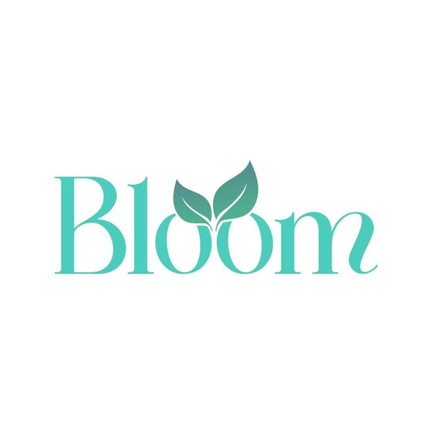
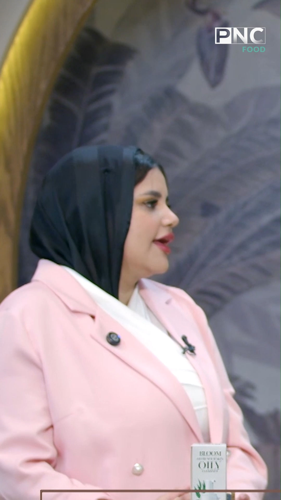
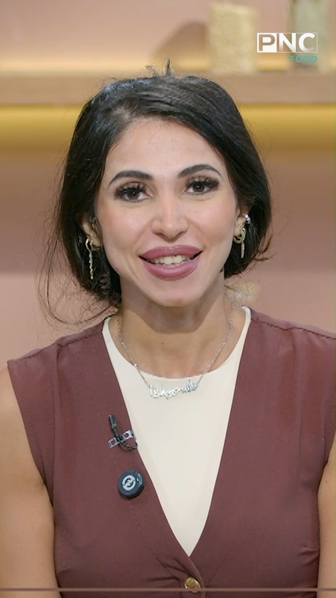
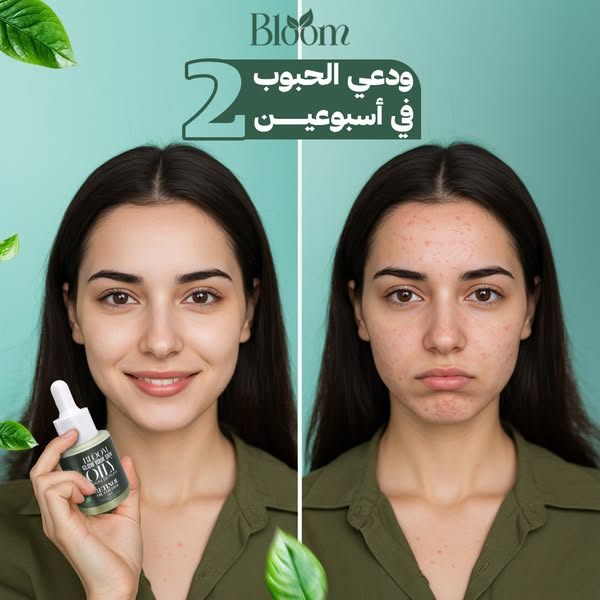
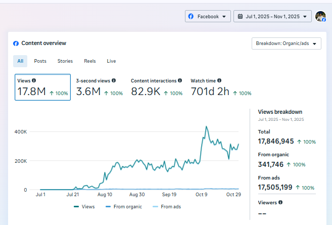
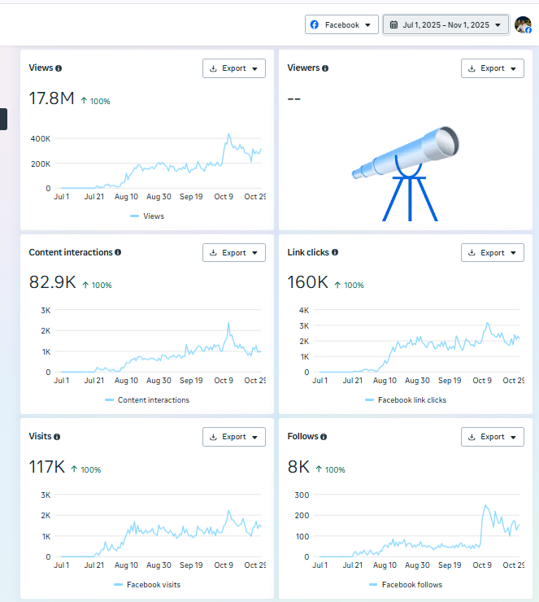
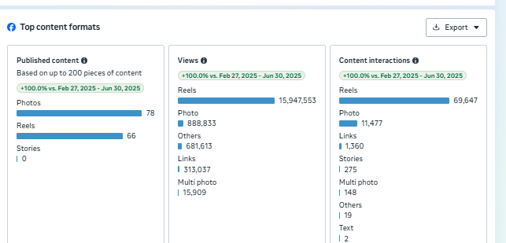
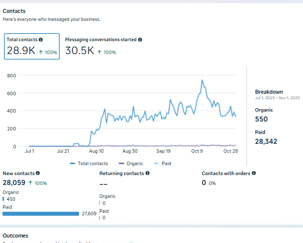

Hook يبدأ من ملمس البشرة، اللمعان، المسام، توحيد اللون، أو مشكلة محددة تشغل العميلة فعلًا.
LOCAL DRAFT / NOT PUBLISHEDBUILD A BRAND
BLOOM / KOREAN SKINCARE WITH EGYPTIAN TECHNOLOGY

BLOOM.EG / OFFICIAL FACEBOOK PAGE ↗BUILD A BRAND
PEOPLE CAN
RECOGNIZE.
تعالى نعرف إزاي براند Korean Skincare بتكنولوجيا مصرية، لسه في أول خطواته، يبقى له شكل وصوت ومكان واضح عند Gen Z—قبل ما نطلب منهم يشتروا.
THE TENSION
DON’T SCALE
WHAT PEOPLE
CAN’T RECOGNIZE.
في فئة مليانة منتجات ووعد “نتيجة سريعة”، التحدي ماكانش مجرد ننزل أكتر. كان لازم نعمل للـBloom شخصية: الناس تعرف هي بتتكلم عن إيه، ليه تسمع لها، وإمتى المنتج يدخل في الحوار بشكل طبيعي.
02 / THE QUESTION
IF THE LOGO
DISAPPEARED,
WOULD THE
CONTENT STAY?
السؤال اللي وجّه الشغل كان بسيط: لو العميل شاف 3 فيديوهات من غير الـLogo، هل هيحس إنهم طالعين من نفس البراند؟ الإجابة وقتها كانت أهم من أي Post منفصل؛ لأن المطلوب في مرحلة التأسيس هو لغة قابلة للتعرّف، مش زحمة نشر.
بدل ما نبدأ بـ“عندنا منتج”، بدأنا من المشكلة اللي هي شايفاها في المراية، ثم المعلومة أو الشخص اللي يخلّيها تثق، وبعدها الخطوة المناسبة.
ده خلّى الـcontent مشاهدات فقط إلى نظام يخدم الثقة، التعلّم، ثم الاهتمام بالروتين أو العرض.
03 / CONTENT THESIS
MAKE THE
BRAND FEEL
USEFUL FIRST.
الـContent Architecture اعتمدت على ثلاث وظائف واضحة: تسمية المشكلة بلسان الناس، تقديم سبب يخلّيهم يثقوا، ثم وضع المنتج كجزء من روتين مفهوم—not as a random sales post.
تعليم وتجربة وخبرة: المحتوى يدي سبب منطقي يكملوا بعده، بدل ادعاء نتيجة من غير سياق.
المنتج يظهر كحل له مكان في الروتين، والعرض ييجي بعد ما قيمة المنتج تكون واضحة.
04 / ORIGINAL CONTENT, NOT MOCKUPS
THE IDEA
HAD TO
TRAVEL.
دي قطع حقيقية من الـContent Library في الفترة نفسها. كل كارت عليه الـvisual الأصلي، ويودّي للـpost أو الـreel على Facebook. الاختيار مقصود: مشكلة واضحة، طبقة ثقة، ثم حل أو روتين له معنى.

OPEN ORIGINAL ↗FACEBOOK REEL / DOCTOR-LED EDUCATION · OCT 26, 2025DON’T START
DON’T START
WITH SOAP.
Hook عن ضرر الصابون على حاجز البشرة، ثم د. سارة تشرح البديل والـroutine بشكل مفهوم.
29,023VIEWS · 22,670 REACH · SOURCE: META CONTENT LIBRARY

OPEN ORIGINAL ↗FACEBOOK REEL / CUSTOMER PROOF · OCT 28, 2025MAKE THE
MAKE THE
PROOF HUMAN.
رأي عميلة يبدأ من الإحساس بالثقة في المراية؛ الـproduct هنا نتيجة في القصة، مش بداية الكلام.
116,258VIEWS · 77,055 REACH · SOURCE: META CONTENT LIBRARY

OPEN ORIGINAL ↗FACEBOOK POST / ACNE CONCERN · OCT 27, 2025NAME THE
NAME THE
CONCERN.
“ودّعي الحبوب” يقدّم المشكلة، ثم سبب المنتج ومكوّناته. مثال على تحويل الـproduct benefit إلى كلام يفهمه الجمهور.
462,999VIEWS · 238,247 REACH · SOURCE: META CONTENT LIBRARY
05 / VISUAL DIRECTION
NOT ONE
TEMPLATE.
ONE WORLD.
الـVisual Direction مش هدفه يخلّي كل قطعة شبه التانية. هدفه إن كل قطعة تخدم زاوية مختلفة، وفي نفس الوقت تفضل من نفس عالم Bloom: clean، عناية، ثقة، ونتيجة مفهومة من أول ثانية.
COMES FIRST.
مشكلة البشرة هي أول مشهد، مش الـpackshot.
VOICE MATTER.
وجود شخص أو تجربة يدي سبب للعميلة إنها تسمع وتكمل.
NEXT STEP.
المنتج يدخل كخطوة منطقية بعد المشكلة والتفسير.
OFFER EARN
ITS PLACE.
العرض ييجي بعد ما القيمة اتفهمت؛ مش بديل عنها.
06 / THE EVIDENCE ROOM
SHOW THE
RECEIPTS.
الـscreenshots دي هي مصدر أرقام الـcase study، والفترة مضبوطة من 1 يوليو إلى 1 نوفمبر 2025. بنعرضها عشان أي حد يقدر يفرّق بين Page-level performance، Content formats، والـcontacts—not to claim that content alone caused sales.




07 / PAGE-LEVEL CONTENT PERFORMANCE
FROM ZERO
TO A REAL
CONTENT ENGINE.
Bloom بدأت من الصفر. النتيجة هنا على مستوى صفحة Facebook خلال فترة الشغل، وتشمل Organic وPaid معًا لأن المصدر لا يفصل الـpage totals. لذلك بنعرضها كدليل نمو للـcontent ecosystem، لا كـOrganic-only أو Sales claim.
SOURCE: Meta Business Suite, Facebook, Jul 1–Nov 1 2025. The overview reports 17,846,945 total views: 341,746 organic and 17,505,199 from ads. Contacts are deliberately kept in the evidence room as mixed paid/organic—not claimed as content-only performance.
07 / DECISIONS, NOT DECORATION
WHAT THE
CONTENT SYSTEM
TAUGHT US.
01
BE SPECIFIC.
OBSERVATION
الـReels اللي تبدأ من مشكلة محددة كانت أسهل في الفهم من الكلام العام عن “نضارة البشرة”.
DECISION
الـhooks تبقى مبنية على concern واضح واللغة اليومية للجمهور.
02
BUILD THE
TRUST LAYER.
OBSERVATION
التجربة أو صوت خبير يدي البراند مصداقية أكبر من Product-only messaging.
DECISION
نستخدم الخبرة كجزء من القصة، مش كـendorsement منفصل.
03
SELL AFTER
THE VALUE.
OBSERVATION
الـOffer يبقى أوضح لما المنتج متقدّم كخطوة لحل مفهوم.
DECISION
العروض تاخد مكانها بعد المحتوى التعليمي أو الـroutine framing.
THE TAKEAWAY
A BRAND
IS BUILT
BEFORE IT
IS SCALED.
في خمسة شهور، الهدف ما كانش نقول إن كل شيء اتعمل. الهدف كان تأسيس لغة تخلي Bloom قابلة للتعرّف: تبدأ من مشكلة واقعية، تبني سبب للثقة، وتخلي المنتج له دور مفهوم في رحلة العميلة.
NEXT EVIDENCE TO ADD BEFORE PUBLICATION:
01 / PERIOD-LEVEL BASELINE & ENDLINE
02 / EXACT POST PERMALINKS FOR SELECTED REELS
03 / CONTENT CALENDAR OR STRATEGY SOURCE
04 / BRAND APPROVAL FOR PUBLIC ADDITION
01 / PERIOD-LEVEL BASELINE & ENDLINE
02 / EXACT POST PERMALINKS FOR SELECTED REELS
03 / CONTENT CALENDAR OR STRATEGY SOURCE
04 / BRAND APPROVAL FOR PUBLIC ADDITION